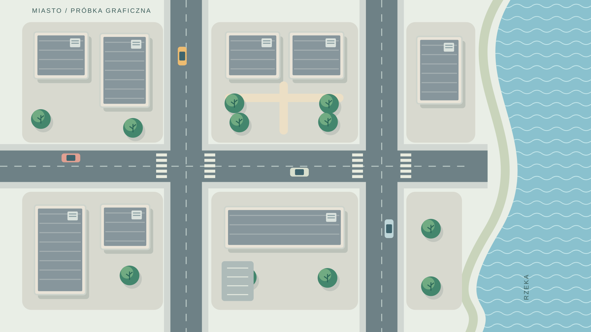

Miasto przyjmuje deszcz.
Dwa stany planszy: dachy szare oraz zielone. Ten sam układ budynków i ulic, wymienne elementy oraz osobna warstwa deszczu.

Szare dachy i utwardzony plac.
DrzewaZielone dachyWoda
Pliki do oceny


Przykład kierunku graficznego, przygotowany bez materiałów klienta. Układ jest fikcyjny; charakterystyczne obiekty konkretnego miasta wymagają osobnego opracowania. To demonstracja grafiki i przełączania stanów, bez modelu hydrologicznego i bez integracji z silnikiem gry.
Pliki planszy: 3840 × 2160. Kontury pozostają ostre dzięki formatowi wektorowemu. Kontakt